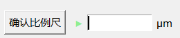

PIC 使用手册
<返回主页
第一步：定义比例尺
显然，在按比例测量一张图像时，比例尺的选取是至关重要的，所以开始测量的第一步应该是选取一个合适的比例尺
在工具栏中，我们提供了比例尺设定工具 来设定比例尺(鼠标悬停显示说明)
在PIC中，比例尺由两个端点和自动生成的连线组成，端点由用户在选取完图片后用比例尺模式通过点击图片绘制
注意，屏幕上第三个端点出现后，第一个端点将消失，周而复始确保屏幕上只有两个端点
比例尺由紫色的端点和紫色的连线组成，建议重叠在原图的比例尺(左图红线)之上
小技巧_快速选取长度：根据特性，只要在第一个目标点双击，那其他的点就会完全清除，此时再点击第二个目标点，即可完成选择
注意到，当点击选择比例尺设定工具后，旁边的确认比例尺按钮和输入框将激活 
此时即可输入所定义的比例尺的真实长度，点击确认比例尺完成比例尺定义
注意：以上两步操作没有固定的先后顺序，可以随时更改！